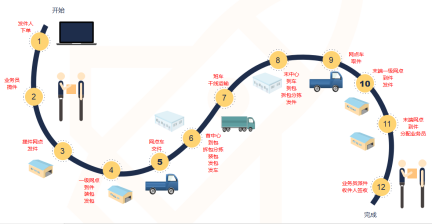
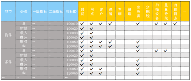
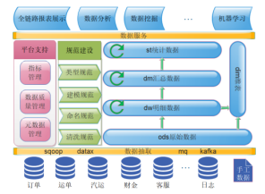
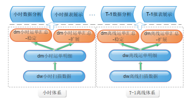
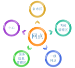
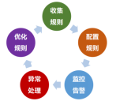
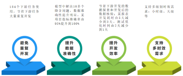

数据中台进行曲之OneData探索实践
一、背景
企业运营产生的业务数据蕴含着巨大的商业价值，是企业宝贵的数据资源。 快速、准确、最大化的利用已存在的数据资源，可以辅助领导层做出商业决策、优化公司业务持续发展形成闭环进而提高企业的核心竞争力。
当企业数据规模较小、业务较单一或者为快速相应业务需求的情况下，经过对业务数据的抽取、清洗、规范化等简单处理后，往往直接用于数据开发。此种方式为烟囱开发模式，虽然可以较快得到开发结果，但是弊端也非常明显：
- 数据层面：
烟囱林立没有共同根基，不能保证数据的一致性，进而影响准确性；
数据无沉淀难复用，进而导致重复开发的情况非常严重；
数据难以服务化；
- 管理层面：
数据质量难以保证；
管理混乱，如果业务数据有变动，影响范围难以评估，改动更是耗时费力；
很难组织元数据管理，尤其是血缘关系，很难理清。
随着业务数据的爆炸式增长，烟囱开发模式的弊端越来越明显，数据开发工作随之遇到瓶颈，工作难以开展。
数仓建设是突破烟囱开发模式瓶颈的灵丹妙药，关系模型和维度模型是数仓建设的两种方法论，其中维度模型由于相对能快速上手、快速交付且较适用于OLAP系统(关系模型适用于OLTP系统)，在业内获得广泛使用。维度模型应用的典型代表是阿里的OneData体系。
中通大数据初创时期，在快速响应业务需求的同时，着手建设数据仓库。结合对OneData的理解和自身特点，我们形成了一套符合自身数据特色的实践体系。

二、经典数据仓库方法论回顾
经典的数仓建设方法有 关系模型(Inmon模型) 和 维度模型(Kimball模型) 。
- 关系模型以数据源为导向，采用自上而下的方法，即从数据源到数据仓库再到数据集市的一种瀑布流开发方法。具有以下特点：
以第三范式（3NF）为基础，数据冗余程度低；
物理表数量多，这些表可以较为灵活地被应用，功能性较强；
DW层数据并不直接被用来做BI分析，而是先在DW层之上建立数据集市，数据集市来满足BI分析需求；
需要全面了解公司业务和数据，实施周期较长
维度模型以业务需求为导向，采用自底向上的方法，即从数据集市到数据仓库再到数据源的一种敏捷开发方法。具有以下特点：
表分为维度表和事实表两种，用星型模型、雪花模型或星座模型等形式进行组织；
物理表的数据量较关系模型少很多；
DW层事实表往往含有一些固化的汇总数据，其上的数据集市建设较关系模型要简便；
从业务需求角度出发，适合快速迭代。
结合上述两种建模方式各自的特点，业内偏向于维度模型构建数据仓库，其中以阿里Onedata体系最具代表性。OneData以维度建模为核心理念，同时对其进行了一定的升级和扩展，包括：一致性的指标定义体系、模型设计方法体系以及配套工具。

三、数仓建设过程
1. 建模方法论:
数仓建设过程中，总结的经验：
高内聚低耦合；
公共逻辑要下沉以及统一口径统一出处确保一致性；
合理控制模型表数量；
合理使用拉链表，拉链较耗性能；
数据质量监控与建模相辅相成；
变化维表尽可能的准确反映历史(维表拉链化或全量快照分区化)；
模型任务要保证时效性。
2. 数仓建设步骤:
数仓建设中，我们遵循下面方法:
需求分析、业务系统数据调研；
分析业务过程、选择粒度并划分主题域；
确定维度并构建总线矩阵；
确定事实。
具体展开分析：
1） 需求分析、业务系统数据调研:
数仓建设首先要有明确的需求，脱离需求空谈数仓建设，缺乏现实意义，且易用性差。数仓建设的需求一般来自四个方面:
(1) 支持应用层业务需求；
(2) 数据分析师的开发需求；
(3) 对现有应用层或数据分析师分析结果的沉淀，将一些通用的统一口径的指标沉淀到数仓；
(4) 对现有数仓的迭代优化
在需求分析的过程中，需要明确统计指标的定义和统计粒度、考虑明细宽表和汇总宽表的设计以及任务的时效性，如果涉及到维表要考虑维表的设置以及宽表中是否要进行维度退化等。
在需求明确后，需要对业务系统进行调研，请业务系统的产品/开发人员介绍具体的业务流程，充分了解业务系统的表结构、表中关键字段甚至是每个字段的业务逻辑以及数据记录的创建、更新等流程。数据的抽取方式(全量还是增量)以及一些特殊情况下数据的补抽方法也需要进行充分调研。总之，数仓要真实的反映业务。
2) 分析业务过程并划分主题域
业务过程指的是公司业务活动中由执行主体完成的的不可拆分的一个原子行为事件。比如“揽件”为业务员(执行主体)向发件人取件(原子行为)的一个行为事件。
(1) 分析业务过程：
了解业务过程产生了哪些数据，这些数据是否会更新，更新的场景有哪些。比如以“运单”为粒度的“揽件”业务过程，其中的“首次揽件时间”字段，可能会随着揽件扫描数据的上传而发生变化(一票运单可能会存在多次揽收扫描的情况，早揽收的扫描记录，可能由于网络等原因比后扫描的记录晚上传)；
明确各个业务过程的联系，在明确各个业务过程的联系之后，才能对整个业务流程有准确把控，并确定哪些是核心业务过程，也有利于主题域的划分。快递行业的业务流程图大致如下图所示：

快递业务流程图
(2) 选择粒度：不同粒度决定了数据的“明细程度”，同时会影响维表的设计。比如对于“揽件”这一业务过程，如果以运单为粒度，则需要设计运单相关维表，如果以“业务员”为粒度，则需要设计业务员相关维表。
(3) 划分主题域：各个业务过程前后关联，完成整个业务流程，将彼此聚合性比较高的业务过程划入同一主题，便于数据的管理、使用和维护。当前划分为: 汽运、运单、客服、财金、客户等主题域。以上所述为从业务角度出发划分主题域，比较适用于数仓明细层。数仓汇总层的指标逻辑往往涉及到多个主题域明细表，此时数仓汇总层按照业务进行主题域划分往往不能全面的反映指标的特质，也会给使用带来稍微不便。所以在数仓汇总层，我们更多的是从分析的角度划分主题域。
3) 确定维度并构建总线矩阵
基于业务过程的分析粒度创建相关维表，比如分别以业务员、运单、客户等为粒度的“揽件”业务过程，要建立业务员维表、运单维表、客户维表。业务员维表包含业务员code、归属网点、姓名、年龄、工作手机号码、三段码等维度信息；运单维表包含 运单code、运单使用日期、运单使用网点、运单打印渠道等维度信息；客户维表包含客户id、来源渠道、注册日期等维度信息。
确定维度要尽量做到维度的唯一性，尤其是一些共享维表，必须做到有且仅有一份。维表尽可能的反映历史。我司采用网点加盟的业务模式，部分维表下放到网点进行维护，数据质量波动较大，维表反映历史既可以还原数据，又方便对维表进行数据质量监控。
维度的获取一般有几个方法：
(1)直接从业务系统获取后，稍作加工；
(2)从业务数据中进行提炼，比如从json结构的业务数据中提炼；
(3)少量的线上手工维护的维表或者需要做深度加工的维表，比如使用桥接模式的维表。
划分了主题域并通过对业务过程的分析确定粒度后，就可以构建总线矩阵。总线矩阵中标明了主题域包含的业务过程，业务过程包含的指标和相关的维度。下图为订单主题域下揽件和派件业务过程的总线矩阵实例：

总线矩阵
4) 确定事实
确定事实其实就是通过确认分析需要的指标来构建事实宽表。事实宽表一般划分为：明细事实宽表和汇总事实宽表，前者主要对原始业务数据进行清洗、规范化等处理，后者主要基于前者进行汇总统计出指标并支撑上层开发。

四、数仓架构
基于前述数仓建设方法，我们把数仓进行如下分层：

数仓架构图
清晰明朗的数据分层，可以提升数仓的结构性、易用性，同时便于管理。业内一般将数仓分为3层或4层，结合工作经验，我们将数仓分为4层，各层的定义和说明如下： 1.数据统计层：
针对不同业务需求进行针对性开发，直接应用于各数据产品
2.数仓汇总层：
1）采用维度退化，提高表的易用性；
2）生成汇总级宽表数据，保存通用性指标，方便统计分析；
3）按照分析域主题划分
3.数仓明细层：
1）一般按数据创建时间或者上传时间分区，按业务主题域划分，同时规范化建表/字段；
2）保留所有历史数据，进行标准化清洗(统一格式、单位、类型、默认值等)；
3）保存明细宽表。
4.操作数据层：
一般按更新时间做增量抽取，表与业务数据库表保持同构。
图中绿色箭头标识层级间的数据流向：ods->dw->dm->st，其中dw、dm层和st层数据可以自流。
原则上要求各层之间不会出现其他数据流向，尤其是数据倒流的情形，如果遇到紧急的临时需求，可以在标识清楚的前提下视情况简化流程；
如果某st层指标为其他多个st层指标的基础，尽量将此st层指标提炼并沉淀到dm层；
数据分析师的分析脚本如果需要沉淀，要沉掉到st层，并对脚本进行review优化，提升时效性；
数据分析师脚本中有线下手工维护的维表，需要把这些维表尽量用现有维表实现或者改由线上维护。
五、模型介绍
1. 事实模型介绍
结合工作经验，从不同角度审视，我们将数仓模型划分为三种类型：
依据数据的汇总属性划分：明细模型(保存明细指标)和汇总模型(保存汇总指标)；
依据数据的变化属性划分：稳定模型(保存逻辑基本不会变化的指标)和扩展模型(保存逻辑易变的指标)；
依据模型的时效性划分：小时模型(模型增量任务每小时运行一次)和T-1离线模型(模型任务每天运行一次)。
在实际的模型开发工作中，随着业务需求的递进，提升模型时效性和快速响应模型指标的逻辑变更是需要持续关注的问题。下面列举几个案例： 时效性问题案例：
案例1： 业务需求对某指标的时间要求由T-1递进为当天的8时、12时、16时。看似最简单有效的方法是：模型任务在凌晨调度之后，在8时、12时、16时再各运行一次。但是这种方法需要解决下面三个紧迫的问题：
模型运行时长不能太长。运行时间太长，指标的生成会延时较久。但是对于较复杂的模型，一般运行时间较长；
随着模型任务的增多，需要排除各个模型任务对各自下游任务的交叉影响，保证模型任务的易用性；
如果业务要求时间点增多，需要等量增加对应时间点的模型任务，这样模型任务会越来越多，直至变成小时任务，但是由于模型任务的运行时间较长，又不具备改成小时任务的条件。
解决方案：
为了提升模型的时效性，我们采用增量更新方法，设计了模型的小时增量更新机制(大多数模型指标可以设置成增量更新的形式)。当前小时模型指标 = 整合(前一小时模型指标 + 当前小时源数据)，相当于把T-1离线模型的全量计算分配到每小时，并结合整合逻辑得到每小时的模型指标。其中整合逻辑的设计是关键，优秀的整合逻辑可以明显提升任务运行效率。T-1离线模型同样需要保留，一方面满足T-1离线业务需求，同时也可以对小时增量更新机制进行对比验证。
模型指标逻辑变化案例：
案例2： 虽然模型指标的逻辑相对固定，但是不排除依据需求进行变更的情形，逻辑变更后，往往需要重刷一定时间段内(一般是1年内)的数据。如果模型宽表字段很多，即使可以单独设计刷数脚本，刷数也依然是一项较繁重的工作(稳妥的刷数步骤:数据刷入临时表-核对逻辑不变指标-校验逻辑更改指标-临时表数据刷入目标宽表)。这显然不能较快的相应业务需求。
解决方案：
为了快速相应模型指标逻辑的变化，我们把模型指标的变化属性作为设计宽表的一个因素，把逻辑较固定的指标放到稳定模型宽表，把逻辑易变或者变化概率较大的指标放到扩展模型宽表，以此来减少逻辑变化后刷数的工作量。
模型实例：基于上面的思路，我们创建了运单模型的小时体系与T-1离线体系，如下图所示：

运单模型体系
其中：
扩展表中恒定指标可以转移到稳定表；
小时模型和离线模型数据做对比验证；
小时宽表只保留最近1月数据；
离线表负责刷历史数据。
模型意义：
运单模型是基于扫描数据生成事实指标描述运单从揽件到最后客户签收的整个生命周期信息，你可以了解到这个运单是被哪个网点揽件，什么时候交到首中心，中间经过哪些中心，最后由哪个网点进行派件，什么时候签收。有了运单模型就可以很方便的对路由、延误、中转流向等业务问题进行统计分析；
2. 维表介绍
维表体系建设出发点：
各业务系统各有一套维表，大数据平台抽取维表后，维表数量过多，使用不便、管理不宜且不能保证唯一性；
大数据应用层产品，为了满足各自需求，创建了一系列维表，功能相似的维表甚至有多个，维表间关系更是错综复杂；
分析师手工维护维表较多，且往往只有一位同事了解，“一人不在，整车抛锚”的风险较大。
变化维表尽可能反映历史。
基于统一维度、净化维表体系的目的，数仓对整个大数据的维表进行梳理、整合、管理，创建共享维表：
相同粒度的维表集成到一张维表，各关系一目了然；
应用层产品的维表统一规划、统一设计，删除冗余维表；
手工维表逻辑公开，且维护线上化；
变化维表拉链化或全量快照分区化。
维表实例:
网点组织关系维表作为典型的共享维表，包含全部涉及到网点的组织关系，支撑了数仓模型、应用层统计分析等相关的维度需求。如下图所示：

网点组织关系

六、数据质量监控与建模相辅相成
任何优秀的模型都是反复迭代开发的结果，迭代的过程中，数据质量监控起到举足轻重的作用。数据质量监控一般从完整性、准确性、一致性、及时性四个方面进行设计，各个模型层偏重点不同。监控的流程为: 从收集规则、配置规则、监控告警、异常处理、优化规则五个环节建立数据质量监控的闭环流程，如下图所示：

数据质量闭环流程
ods/dw层为直接抽取的业务数据或者清洗过的明细数据，主要侧重于数据的完整性、一致性以及少量的准确性检测：
1)规则检测：各类规则检测，比如运单号规则，对不合规单号进行预警，确保准确性；
2)量值检测：抽取数据量与源表数据量对比、重复数据检测、空值检测等确保完整性、一致性；
3)规范检测: 指标类型格式检测，比如日期格式: yyyy-MM-dd，时间格式: yyyy-MM-dd hh:mm:ss；
4)其他检测：字段错位检测、对比检测、抽取任务风险提前检测等。
dm/st层为汇总过的统计类数据，主要侧重于数据的准确性、及时性和完整性检测：
1)量值检测: 分区表当天分区中数据量环比/同比检测等；
2)比率检测: 各渠道业务量占比环比对比检测等；
3)对比检测：小时宽表与T-1宽表指标对比，离线指标与实时指标对比等；
4)其他检测: 模型宽表任务运行时间环比检测等。
案例1： 指标变化异常告警
告警信息：无派件数据量检测：检测数据日期 2019–，网点*环比数据异常，增加比例为162.0%；
自上而下追踪：核验st层表中数据量环比变化 -> 模型宽表数据核验 -> 源扫描表数据核验，并使用公司内部工具进行对比检查，最终确定扫描表中告警网点的数据有缺失，深究原因：DBA做扩容引起备库数据入库时间为空值，导致数据抽取不到。及时通知DBA对数据进行修复处理。
案例2： 抽取任务风险提前检测告警
业务系统偶尔会对一定时间范围内的数据进行重刷，这样会导致刷数当天的增量数据陡增，影响第二天凌晨的数据抽取任务，严重的会导致任务失败。通过“抽取任务风险提前检测”监控，我们可以提前感知并确定风险，对抽数任务做针对性调整，即不影响数据抽取，又能保证第二天任务的时效性。
告警信息：抽取任务风险告警：检测数据日期 2019–，表数据量环比数据异常，增加比例为972.0%。
风险追踪：核验风险 ->通知业务表负责人，询问情况 -> 抽数任务做针对性调整
数据质量检测，重点在于监控规则的生成整理和优化。同时完善的开发规范、良好的开发习惯、严谨的代码review流程都可以减少不必要的数据质量问题。

七、项目收益
基于数仓建设成果，并结合实际项目历程，以运单模型为例列举收益如下：

运单模型收益

八、展望未来
基于对OneData体系的理解并结合行业特色，我们构建了可靠、稳定的数据仓库，形成了良好的开发循环。模型的时效性是我们持续关注的地方，同时我们也致力于提高模型的覆盖率，尽量做到覆盖所有关键业务。
通过不断提升数据的准确性、一致性、时效性来为数据应用层开发提供强力支撑是我们坚守的使命。 展望未来，为数据中台提供稳定、准确的数据基底是我们持续奋斗的目标。